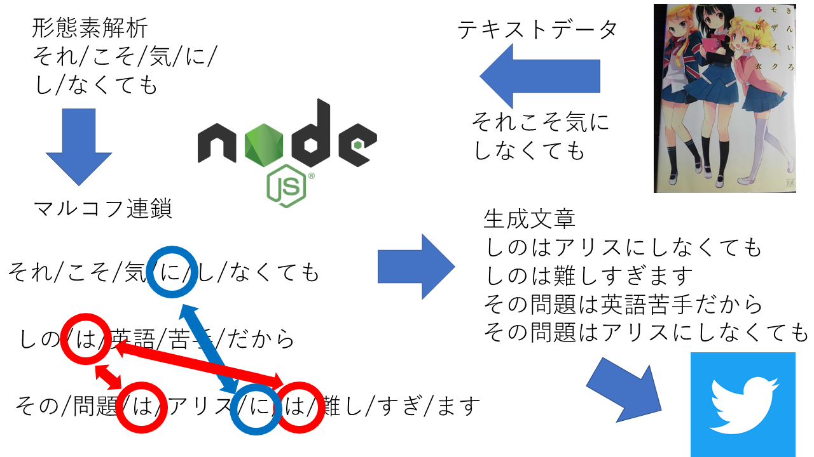

小路綾botとは
小路綾ちゃんの発言を解析し再構成しtwitter上であややっぽく振る舞うbotシステムですとりあえずここのリンクを見ていただきたく思います
機能としては、10分に1度ツイートする機能、リプライに対して返答する機能を持っています
リプライも機械的に処理しているだけなのでお気軽に頂ければと思います
小路綾bot
ソースコードはこちらからご覧いただけます
github
技術的解説
技術的解説と言ってもAIの機械学習ほど複雑な機能は実装していません。 マルコフ連鎖という簡単なプログラムを利用しています。具体例を見てみましょう
例えば以下の入力があったとします
1 "それこそ気にしなくても"
2 "しのは英語苦手だから"
3 "その問題はアリスには難しすぎます"
これに形態素解析という単語ごとに区切る処理をすると以下のようになります
1 "それ/こそ/気/に/し/なくても"
2 "しの/は/英語/苦手/だから"
3 "その/問題/は/アリス/に/は/難し/すぎ/ます"
この中から、1番目の"それ/しの/その"の中からランダムで一つ選びます。ここでは2文目の"しの"が選ばれたとします。
"しの"の次は"は"です。入力された単語の中から"は"を探すと、2文目と、3文目に二つ、"は"がヒットします。
そこからランダムにどちらに進むか選びます。ここでは3文目の前側が選ばれたとします。
"は"の次は"アリス"です。入力された単語の中から"アリス"を探しますが、ほかにヒットしません。引き続き3文目を見ていきます
"アリス"の次は"に"です。入力された単語の中から"に"を探すと、1文目と3文目の"に"がヒットします。
そこからランダムに...と繰り返していくと、それらしい文章を生成することができます。

今後について
可能ならAI化したいです。したいですがそんな技術力ないのでマルコフ連鎖を利用しつつ品詞とか検知して精度を高められないかなぁ...とか思ってます。 nodejsに機械学習が来るのが先か、私がpythonを覚えるのが先か...Live2Dとか使ってデスクトップマスコットとかも作りたいと思いつつ未知の領域なので手が出せずにいます。まぁ今後の課題ですね...
いつの日か、私のプログラムでアヤヤを完全にエミュレート、成し遂げたいです